FMOD Studio User Manual 2.02
- Welcome to FMOD Studio
- FMOD Studio Concepts
- Organizing the Project
- Authoring Events
- Working with Instruments
- Managing Assets
- Parameters
- Getting Events into Your Game
- Mixing
- The Sandbox
- Editing During Live Update
- Profiling
- Dialogue and Localization
- Using Source Control
- Supporting Downloadable and User-generated Content
- Advanced Topics
- Quick Start Tutorial
- Event Macros Drawer Reference
- Instrument Reference
- Plug-in Reference
- Modulator Reference
- Parameters Reference
- Scripting
- Scripting API Reference
- Keyboard Shortcut Reference
- Troubleshooting
- Glossary
- Appendix: Celeste Getting Started Guide
- Appendix: Reaper Integration
14. Using Source Control
Source control (also known as revision control) is a means of managing and tracking changes made to collections of files. Source control systems such as Perforce, SVN, and Team Foundation Server have many uses, from rolling back to earlier versions of a project to facilitating collaboration between users, and are widely used throughout the games industry.
FMOD Studio is integrated with several of the most common source control systems, and can support additional source control system integrations via scripts. This chapter explains how to make use of these integrations.
This chapter assumes that you've already installed a source control system on your computer and have access to a server with a source control repository. If you haven't yet installed source control software or gained access to a repository, consult your source control software's documentation to find out how.
For examples on creating your own source control integration scripts, refer to the perforce.sc.js and svn.sc.js example scripts in the "scripts" folder of your FMOD installation, as well as the Scripting chapter.
14.1 Adding Your Project to a Repository
Before taking advantage of FMOD Studio's source control integration for an FMOD Studio project, the project must be added to the source control repository.
An FMOD Studio project only has to be added to the repository once. It can be added either through FMOD Studio or an external program. If the project is already in the source control repository, you can skip this tutorial and move straight onto getting a local copy of the project as described in the Getting a Local Copy of your Project section of this chapter.
Before adding an FMOD Studio project to the repository, make sure that its assets folder and built banks output directory properties are set correctly.
- The built banks output directory is the same for all users of a project, so it should be set to a relative or absolute path that everyone collaborating on the project agrees on. It is possible to change the bank build directory later, but doing so changes it for all users.
- If any member of your team wishes to use an assets folder outside of the FMOD Studio project folder, all members of your team should use an assets folder outside of the FMOD Studio project folder. This is to prevent files in the project folder's assets subdirectory from bloating the size of the project in the repository. Each user may set a different relative or absolute path for his or her asset directory, as long as each path is outside of the FMOD Studio project folder.
To add an opened FMOD Studio project to a repository:
- Click "Edit > Preferences..."
- Select the source control tab
- Select your source control solution from the "Integration Type" dropdown
It is possible to add a project to a repository by using an external tool such as P4V, Helix, Helix Core, or tortoiseSVN. If you do this, it is important to exclude the following files from the repository:
- The FMOD Studio project's folders ".user", ".cache", and ".unsaved" subdirectories, if present. These folders are only created as needed, and so are not present in all FMOD Studio projects. They may also be hidden from view, depending on the operating system's settings.
- The FMOD Studio project's built bank files if it is decided not to include them. The banks can be built locally after acquiring a local project.
- The FMOD Studio project's assets if it is decided not to include them. The assets must be present in a location known to the FMOD Studio project in order to be used, such as a separate folder.
Failing to exclude these files from the repository will unnecessarily increase the size of the project on the server, and may result in loss of user settings, project validation errors, and other errors.
14.1.1 Adding Your Project to a Repository with Perforce
Adding projects to a Perforce repository entirely through FMOD Studio is possible as long as the project is located inside an existing Perforce workspace on the local disk.
-
Open the preferences dialog and click on the source control tab.
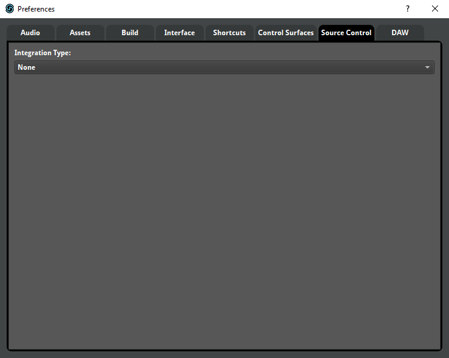
-
Click on the "Integration Type" dropdown menu, and select "Perforce."
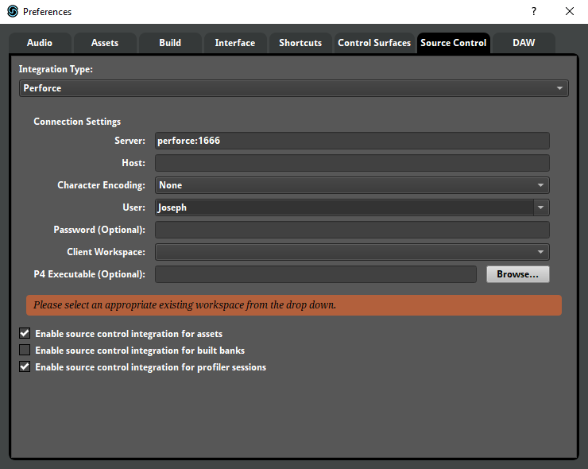
-
Enter the server, host, user, and password details as needed.
The existing Perforce environment settings are used to automatically fill in the server and user fields, if possible. This does not include the Perforce password.
Alternatively, the details can be filled in manually.
Most workspaces do not require a specific host machine. Enter the name of the required host machine, otherwise leave it blank.
If the IP address, port, host machine, username, or password of your Perforce server is unknown, contact your Perforce administrator.
-
Select the workspace where the FMOD Studio project is saved from the "Client Workspace" dropdown.
A few moments after entering the required details, the "client workspace" dropdown menu fills with a list of available workspaces.
It can take a few seconds for the list to update, depending on the speed of the network.
-
Decide if the project's assets, built banks, and profiler sessions are to be included in the repository.

By default, assets and profiler sessions are included, but built banks are not.
Including the project's assets in the repository allows those assets to benefit from source control, but also increases the size of the repository. Disabling source control integration for assets may be useful if the team is planning to store their assets on a shared network drive or similar shared location.
Including the project's built banks in the repository allows people who are working on the same project to get the banks from the server instead of building them themselves, but also increases the size of the repository.
Including profiler sessions in the repository makes it easier to share diagnostic information about the project, but also increases the size of the repository.
-
Close the preferences dialog.
-
Select "File > Source Control > Sync Latest, Merge & Commit..."
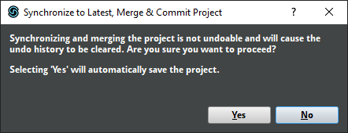
Synchronizing and merging the project is not undoable. Clicking "Yes" will automatically save the project and clear the undo stack, just as if you had closed and re-opened FMOD Studio. This is your last chance to undo or make changes before submitting the project.
If you are certain about submitting your changes, click "Yes."
-
Submit your project.
After a few moments, the submit dialog appears. Its "Changes" tab displays a list of every element of the project to be submitted. At the bottom of the dialog is a field labeled "Enter description here" and a grayed-out button labeled "Submit."
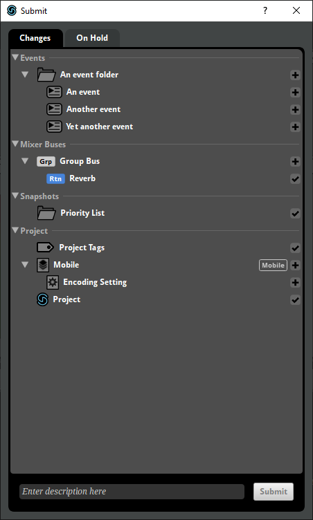
The Changes tab displays everything that's going to be submitted to the repository. In this case, that means the entire project.
The "On Hold" tab lets you exclude specific parts of the project from being submitted. You don't need to use that tab when submitting a project to the repository the first time. For information about the On Hold tab, see the committing Changes section of this chapter.
Whatever you type into the "Enter description here" field is used as the description of the changelist in Perforce. It's good practice to write a description that can be easily understood without additional context.
-
Click on the "Enter description here" field and type "Added FMOD Studio project to repository."
-
Click the Submit button.
A progress dialog appears, and starts to fill. Once it reaches 100%, it disappears. Depending on the size of the project and the speed of the network, it may take a few minutes to completely fill.
The project has now been added to the Perforce repository.
14.1.2 Adding Your Project to a Repository with SVN
It isn't possible currently to add a project to an SVN server through FMOD Studio. Instead, this needs to be done manually through either the command line or a user interface such as tortoiseSVN. Please see the documentation for your SVN solution of choice on how to do this.
After confirming the project has been added to the SVN server, the project can be loaded.
14.2 Getting a Local Copy of Your Project
Once a project has been added to a repository a local copy of that project is needed on your machine in order to work on it.
The easiest way to obtain a local copy of a project already in your source control repository is to use FMOD Studio's "File > Source Control > Browse for Project..." menu item and follow the integration-specific instructions below.
Note that you only need to open a project with "File > Source Control > Browse for Project..." once on each machine that you use. This is because opening a project in this way automatically creates a local copy of that project, which can subsequently be opened by selecting "File > Open..." Opening a project with "File > Open..." is slightly faster than opening it with "File > Source Control > Browse for Project..."
It is also possible to obtain a local copy of your project by using an external tool, such as P4V or tortiseSVN. If you do this, you will need to set up the local copy's source control settings manually. For more information on how to get a local copy of a folder in a source control repository by using an external tool, see that tool's documentation.
14.2.1 Getting a Local Copy of Your Project from a Repository
Before creating a local copy, if you are using Perforce then you'll need a local workspace for the repository in which your project is stored. If you don't already have a local Perforce workspace and don't know how to create one, consult your Perforce administrator. Once you have a local Perforce workspace, you can use FMOD Studio to make a local copy of any FMOD Studio project in the corresponding Perforce depot.
If you are using SVN, then you do not need to set up anything prior to the next steps.
-
Select "File > Source Control > Browse for Project"
The open dialog appears. Select your source control solution of choice from the integration dropdown menu, which is set to Perforce by default. Fields for entering your connection settings properties appear below the dropdown menu.
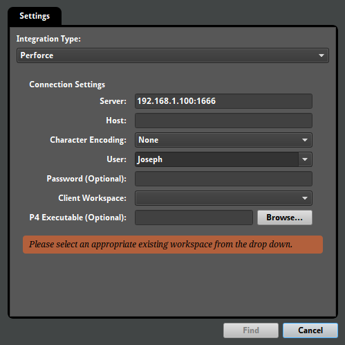
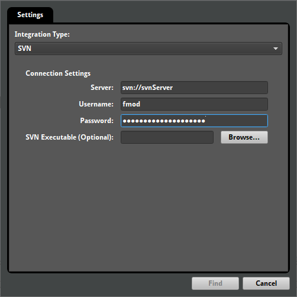The server and user fields might already be filled in. FMOD Studio automatically detects open Perforce connections, and uses the details of those connections to fill out those fields if it can. That said, FMOD Studio can't detect your Perforce password, and if you use multiple open Perforce connections it might not select the one you want.
-
Enter the server you want to connect to and the user you want to connect as into the server and user fields.
If you don't know the I.P. address and port of your source control server, ask your network administrator.
-
Enter the password in the "password (optional)" field if your source control server requires a password.
Some source control servers don't require passwords, but most do. If you don't know the password for the user you're connecting as, contact your source control system administrator.
-
If using Perforce, and the workspace is on your local machine, leave the host field blank. If the workspace is located on a machine other than the one you are using, enter that machine's I.P. address and listening port into the host field.
Once you've finished entering connection details, you can continue.
-
Click the "Find" button at the bottom of the dialog.
A progress dialog appears as FMOD Studio searches the source control depot. After a few moments, the dialog displays a browser populated with the projects in that depot.
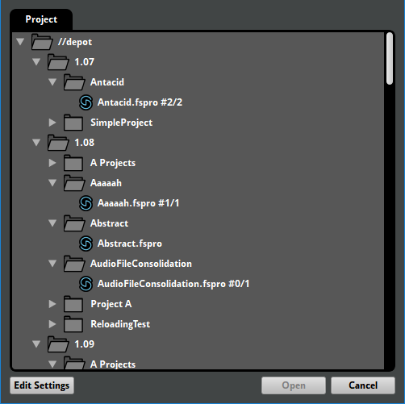
This browser allows you to select a specific FMOD Studio project to create a local copy of and load. If the project you want a local copy of is not displayed in the browser, it may be missing from your Perforce depot, or in a part of the depot other than the part that your local workspace corresponds to.
-
Select the FMOD Studio project you want to create a local copy of, then click the "Open" button at the bottom of the dialog.
When using Perforce, FMOD Studio creates a local copy of the selected project in your local workspace, then loads the project.
When using SVN, FMOD Studio prompts you to choose a local location for the project to save to, then loads the project.
With that, a local copy of the FMOD Studio project has been created and is loaded. The project's source control settings have automatically been set up, so you'll be able to start working on the project and submitting the changes you make right away.
The status bar updates to show the "Online" icon. For as long as a valid connection is available, this icon appears in the status bar. If a valid connection is not available, perhaps because of an incorrect source control setting or because the connection with the remote repository has been lost, then an "Offline" icon is shown.
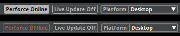
In future, you'll be able to load the project as described in the Loading Your Project section of this chapter, below.
It is also possible to get a local copy of the project folder by issuing a p4 sync or similar command to the P4/SVN command line, via P4V, or via an SVN GUI application like TortoiseSVN. Provided the project was added to the repository correctly, obtaining a local copy of the project this way differs from getting one via "Browse for Project..." only in that it doing so does not automatically set up the project's source control settings.
14.3 Loading Your Project
Loading an FMOD Studio project that uses source control is no different to loading any other FMOD Studio project: Select "File > Open...", then use the ensuing dialog to navigate to and select the FMOD Studio project you wish to load. If there is no local copy of the FMOD Studio project on the machine you are using, see the getting a local copy of your project section of this chapter.
After loading a project, select "File > Source Control > Sync Latest & Merge Project..." to get all the latest changes to that project from your source control repository.
14.4 Syncing Your Project
When multiple people are using source control to collaborate on the same FMOD Studio project, you may notice that some elements of the project are marked with ghosted icons.
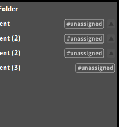
These icons indicate elements of the project that are being edited by other users.
It is important to regularly synchronize your local copy of the project with the version in your source control repository. This ensures that your local version is the most recent version available, and includes all recent changes and additions.
To synchronize the entire project, select "File > Source Control > Sync Latest & Merge Project..." This gets the latest version of the project from your source control repository.
You can also synchronize individual events, assets, buses, VCAs, parameters, and effects by right-clicking on the item to be synchronized and selecting "Save & Selection" from the source control integration-specific submenu of the context menu.
14.5 Committing Changes
After you make changes to a project that uses source control, it is necessary to commit those changes so that they're included in your source control repository.
Elements of the project that have been changed, but whose changes have not yet been committed to the source control repository, are marked with checkmark icons. Similarly, elements that have been added to the project but have not yet been committed are marked with plus sign icons.
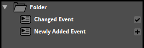
Note that committing changes automatically saves the project.
To commit the changes you've made to an existing project:
-
Select "File > Source Control > Sync Latest, Merge & Commit..."
A dialog appears, warning you that synchronizing and merging the project is not undoable, and that electing to continue will save the project.
-
Click "Yes."
A progress bar dialog shows the project's save progress, followed by a second progress bar dialog that shows the project being prepared for committing changes.
Once saving and preparation is complete, the submit dialog appears. It has two tabs, "Changes" and "On Hold." Under the Changes tab is a list of project elements with changes to be committed.
If there's any elements of the project whose changes you don't want to commit to the repository yet, you can avoid committing them by dragging them onto the On Hold tab. Elements on the On Hold tab are not committed, but will remain marked as changed and can be committed later. If you change your mind about an element that's on hold, you can simply switch to the On Hold tab and drag it onto the Changes tab.
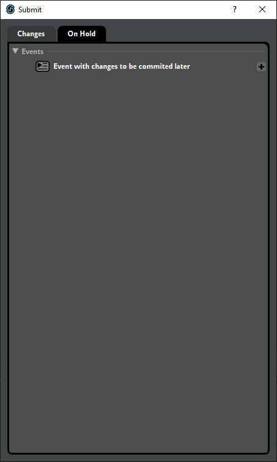
Note that dragging certain elements of the project onto the On Hold tab or Changes tab automatically causes some related elements to move to that tab as well. This indicates that those elements are all stored in the same file on disk, and so cannot be committed or put on hold individually.
Once you've decided which elements of the project to put on hold and which you want to commit, it's time to send the changed files to the repository.
-
Click on the "Enter description here" field, and type an appropriate description of the changes you've made.
Whatever you type into the "Enter description here" field is used as the description of the change in your source control repository. It's good practice to write a description that can be easily understood without additional context.
-
Click the "Submit" button.
The submit dialog closes, and a progress dialog appears as the changes are committed to the repository. After a few moments, the progress dialog disappears.
With that, the files are committed to the repository, and become available to everyone collaborating on your project the next time they select "File > Source Control > Sync Latest & Merge Project..."
14.5.1 Resolving Conflicts
If any of the changed elements that you commit have also been changed by someone else, the conflict resolution dialog appears.
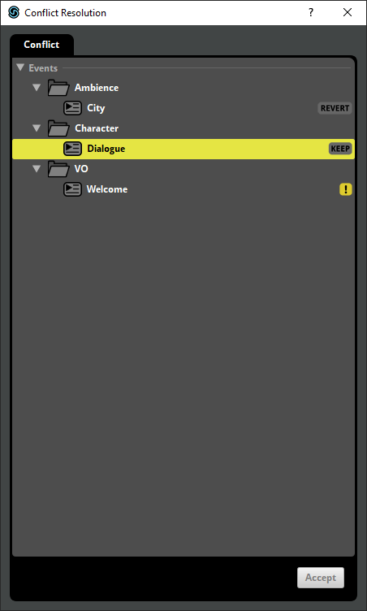
This dialog lists all the elements of your project that have been changed by other users since you last synchronized your project. In order to finish committing your changes, you must resolve each of the conflicts.
To resolve a conflict, right-click on the element and select "Accept Theirs", "Accept Yours", "Merge", or "Revert" from the context menu.
-
Selecting "Accept Yours" means that when you click the accept button, your changed version of the element will be committed to your source control repository, while their changes to that element will be discarded.
-
Selecting "Accept Theirs" means that when you click the accept button, their version of the changed element will remain in your source control repository, while your version will be discarded. Note that changes discarded in this manner cannot be recovered.
-
Selecting "Merge" means that when you click the accept button, FMOD Studio will apply both your changes and the other user's changes to the element, as long as those changes are compatible with each other. If any of your changes are incompatible with a change made by the other user, your change will be committed to the source control repository and their change will be discarded, unless their change was to delete some part of the project, in which case your change will be discarded. Note that if any of your changes are discarded in this manner, they cannot be recovered. For example, if you and the other user added new audio tracks to the same event, the changes are compatible, and both new audio tracks will be present in your source control repository. If you and the other user both set the the master track volume of a particular event to different values, selecting "Merge" will set the volume in your source control repository to the value you specified. Finally, if your change was to set the fader volume of a particular audio track, and the other user's change was to delete that audio track, selecting "Merge" causes the audio track to be deleted in your source control repository.
-
Selecting "Revert" causes your version of the changed element to be discarded immediately. This is similar to selecting "Accept Theirs", but your changed version is discarded immediately instead of when you click the accept button. Note that changes discarded in this manner cannot be recovered.
There is no one right way to resolve conflicts. If you are uncertain which option to select, consult with the other members of your team.
14.6 Reverting Changes
If you have made changes to your FMOD Studio project that you do not want to keep, it is possible to "revert" the project.
Reverting makes your local copy of the project identical to the version most recently submitted to your source control repository. This effectively undoes every change made to the project since the last time the project was synchronized, even if you've exited and reopened FMOD Studio after making those changes.
If your project's assets are stored in the project folder's assets subdirectory, and source control integration is enabled for assets, reverting the project undoes changes made to your project's assets.
If your project's built banks are stored in the project folder's build subdirectory, and source control integration is enabled for built banks, reverting the project undoes changes to your project's built banks.
To revert the project, select "File > Source Control... > Revert Project..." This command is also found under the source control-specific submenu of the context menu that appears when you right-click on the events browser, assets browser, routing browser, parameters browser, or effects browser.
For information on reverting individual elements of a project instead of the entire project, see the committing changes section of this chapter.
14.7 Working Offline
It is sometimes necessary to work on your FMOD Studio project in situations where your project's source control repository is not available, perhaps due to network downtime or working without an internet connection.
If FMOD Studio is unable to connect to the server used by your project's source control repository, you can still freely edit your FMOD Studio project, but you cannot synchronize the project or commit changes, and elements of the project edited by other users are not marked by ghosted icons.
In addition, if you attempt to save the project when FMOD Studio is not connected to your project's source control repository, you will be prompted to disable source control and make files writeable.
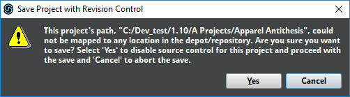
Disabling source control in this way means that you will not be able to sync your project or commit changes to your source control repository until you manually re-enable source control for that project.
To re-enable source control for a project that has had source control disabled, open the source control tab of the preferences dialog, and enter your source control settings as if preparing to add your project to your source control repository. (For information on how to add your project to a source control repository, see the adding your project to a repository section of this chapter.) Once you have closed the preferences dialog, select "File > Source Control > Identify Local Changes..." to automatically detect changes made since the last time your project was synchronized and committed. Changes detected this way are included in the changes tab of the submit dialog the next time you commit changes.
14.8 Troubleshooting
FMOD Studio projects subject to source control may occasionally exhibit validation errors, outdated or missing content, or other problems. The following methods may allow you identify or fix these problems.
If you encounter a problem that these troubleshooting methods cannot solve, contact FMOD support through the QA Forums with a description of the problem.
14.8.1 Revert Local Changes
Reverting the project (as described in the the reverting changes section of this chapter) can eliminate problems in your local copy of an FMOD Studio project, provided those problems are not also present in the version of your project checked in to your source control repository. Of course, reverting a change effectively undoes that change, so this solution should only be used when the local version of your FMOD Studio project is salvageable.
14.8.2 Project Validation
When multiple users edit related elements of a project, the different changes are merged into a single version of the project that includes all the changes. This merging process can occasionally result in the project containing minor inconsistencies known as "project invalidities."
To detect and fix project invalidities, select "File > Validate Project..."
If a version of your project containing invalidities has been committed to your source control repository, a member of your team should sync their local version of the project as described in the syncing a project section of this chapter, select "File > Validate Project..." as described above, then commit the change to your source control repository as described in the committing changes section of this chapter. All other members of your team should then sync their local versions of the project to that in the source control repository. This process ensures that the version of the project in your source control repository is purged of invalidities, and that everyone collaborating on your project is using that version as a basis for making further changes and additions.
14.8.3 Removing Hidden Folders
An FMOD Studio project folder may contain .cache, .user, and .unsaved subfolders that store cached build data, user settings, and working data that allow FMOD Studio to run more efficiently and allow its interface to be customized to your needs. These subfolders do not contain any data that affects in-game behavior, and so FMOD Studio does not commit these folders to your source control repository.
However, if they are somehow committed to your source control repository by mistake, they may result in syncing and committing changes taking longer than necessary, increased project size on disk, and user settings being overwritten when syncing the project.
If the .cache, .user, or .unsaved subfolder of an FMOD Studio project has been included in your source control repository, removing that folder from your source control repository should result in improved performance.
If the ".cache", ".user", or ".unsaved" subfolders reappear in your source control repository after being removed, it may mean that an external tool used by your team (such as P4V or tortoiseSVN) has been configured to commit files in those folders to the repository. If so, ask your source control administrator to reconfigure the tool.
14.8.4 Slow connections when using SVN
Under certain circumstances, there might be slowness with the SVN integration. This can be tasks such as saving changes to a single event taking up to a minute with SVN integration enabled. This is due to the integration using the SVN command line. Any slowness in the SVN command line can have a significant impact on the integration performance.
If a project is already in SVN and checked out you can perform a quick test to verify the performance of the SVN command line. To do this, open a terminal (Mac) or command prompt (Windows) and enter the following command:
<path to svn executable> info -r HEAD "<path to project>/Metadata/Workspace.xml" "<path to project>/Metadata/Mixer.xml"
If the SVN server and the project are setup correctly, the above command displays the output for the 2 files in less than a second or so. There should be no pausing in between the display of the output for each file.
If the output is slow then this suggests the SVN server and project setup is not optimal. Check the output of the two files for the "Repository Root" field. If the field shows the domain name of the server (e.g.svn://mysvnserver) rather than an IPv4 (e.g.svn://192.168.1.123) or IPv6 address (e.g.svn://[fe80::e9db:5127:a77a:3c50]) then the issue might be due to domain name resolution and an SVN server that prefers IPv4 when resolving.
The domain name might be resolved to either an IPv4 or an IPv6 address depending on your network and machine setup. If it resolves to IPv6 address and the --prefer-ipv6 option is not enabled on the svnserve command, there will be a significant performance penalty. To resolve this issue, either enable the --prefer-ipv6 option on the svnserve command or use the svn relocate command to change the repository's root URL of your project from domain name to IPv4 address of your server.
For example, if the SVN server is started as a service, enabling the IPv6 option would look like:
"C:\Program Files\TortoiseSVN\bin\svnserve.exe" --prefer-ipv6 --service -r E:\SVN\Repository
To relocate an existing local copy of SVN project if the SVN prefers IPv4:
"C:\Program Files\TortoiseSVN\bin\svn.exe" relocate svn://mysvnserver svn://192.168.1.123 E:/MyProject